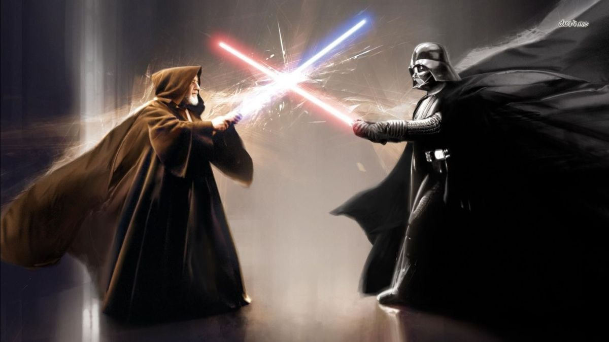

About Darth Vader.
As a new Dark Lord of the Sith, Darth Vader was key in helping Emperor Palpatine destroy the Jedi Knights.
Darth Vadar fighting againest Obi-Wan Kenobi.
Darth Vader's characteristics.
- He is Palpatine's enforcer.
- His main ability is telekinesis.
- He uses a red lightsaber.
Darth Vader's Enemies.
Darth Vader has many enemies. I think his worst enemy is Luke Skywalker. Click on the links below to read more about them: